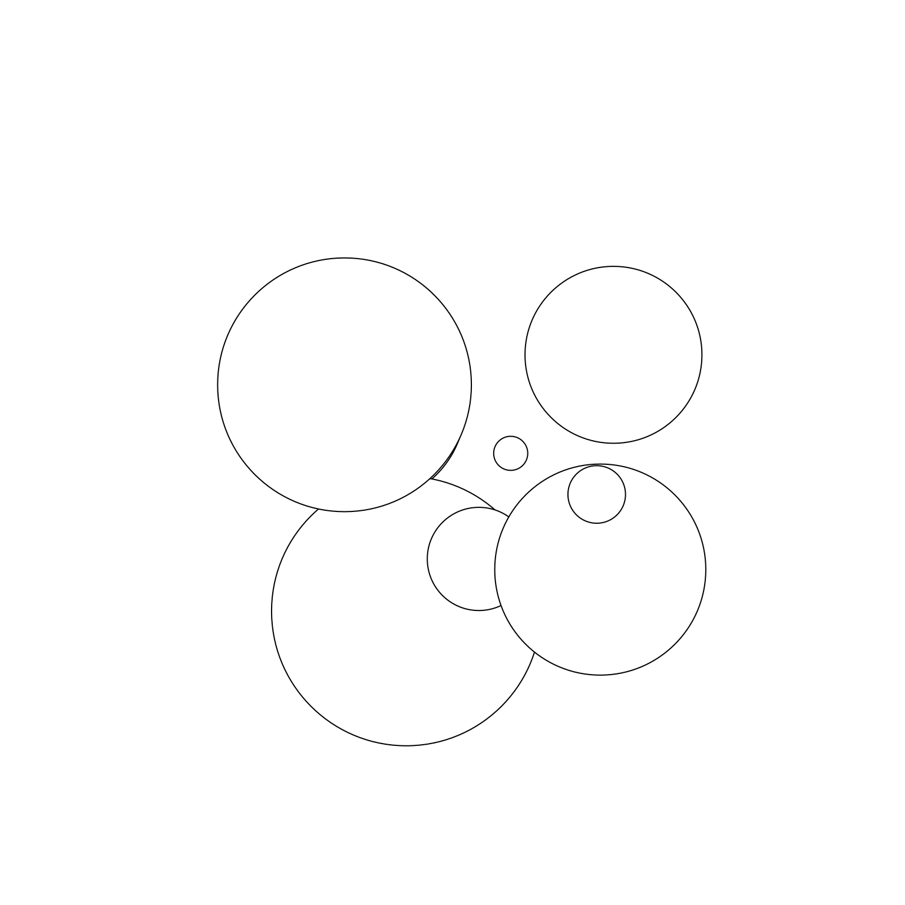
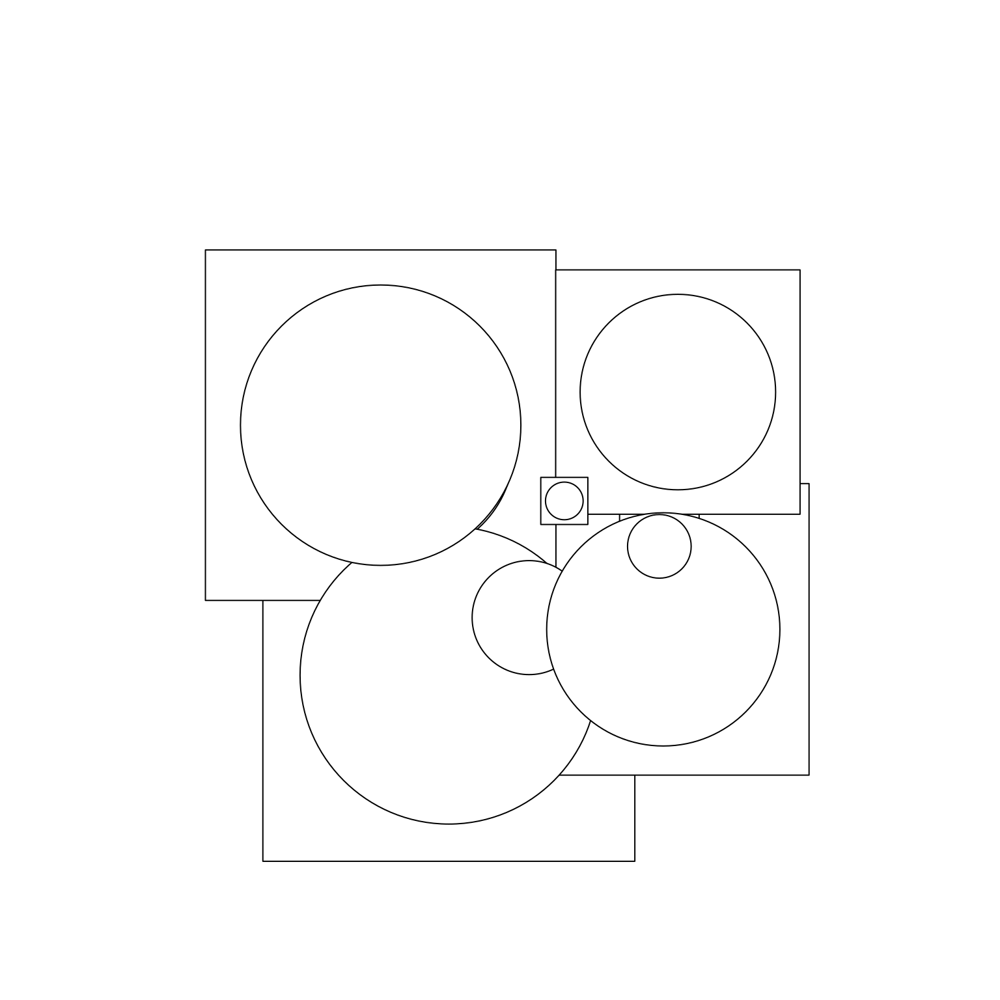
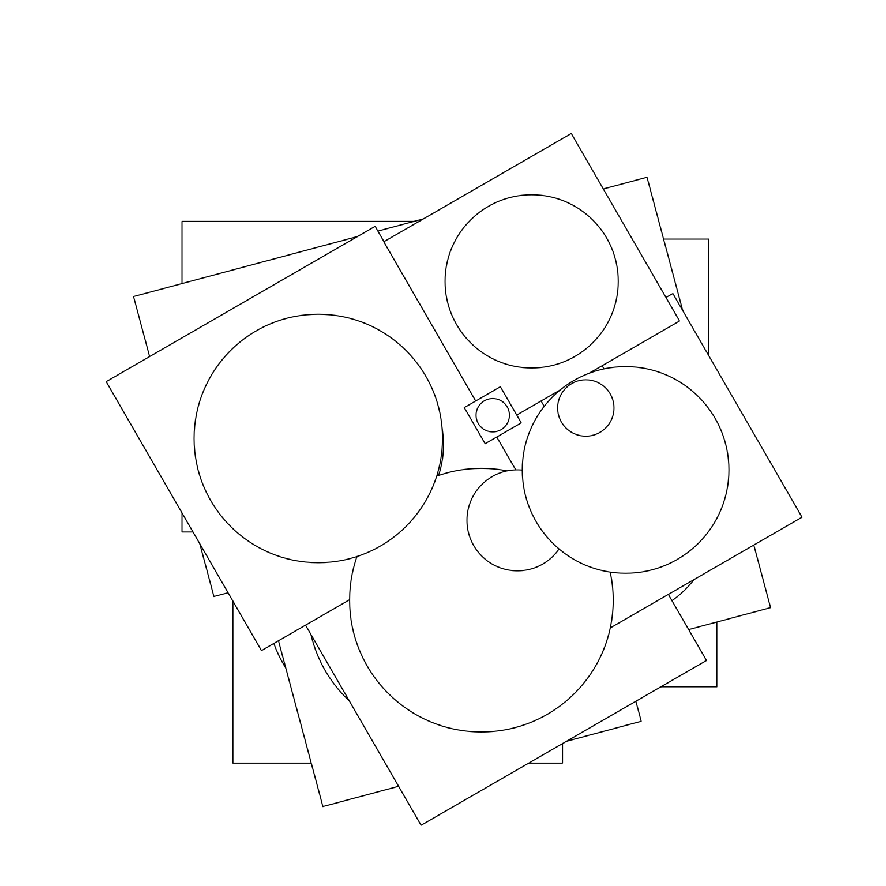
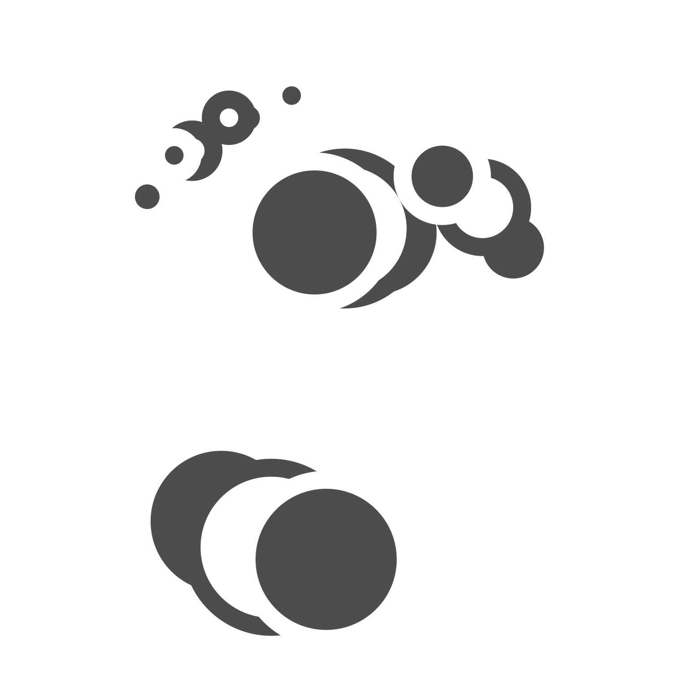
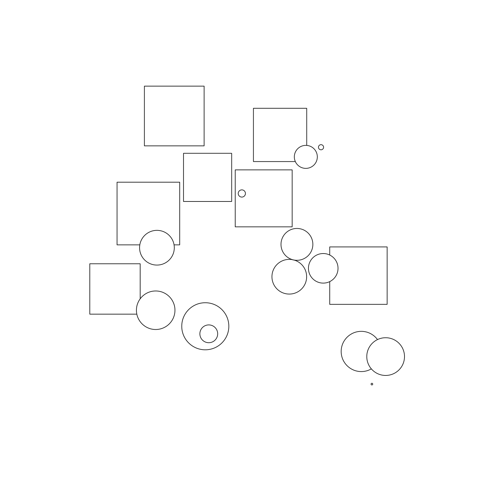
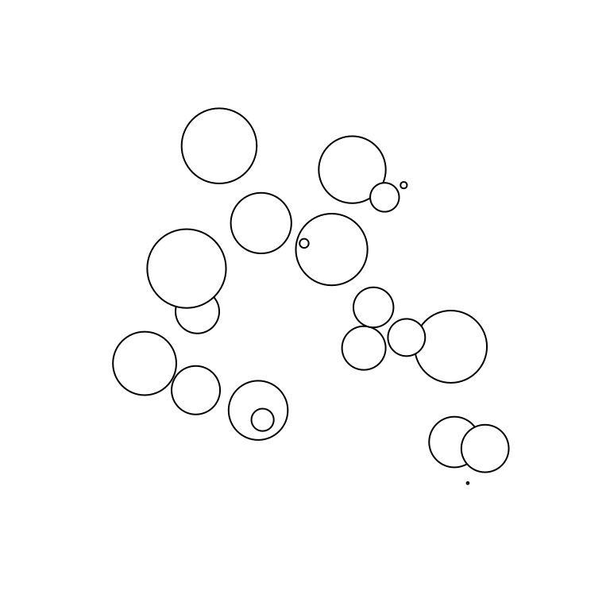
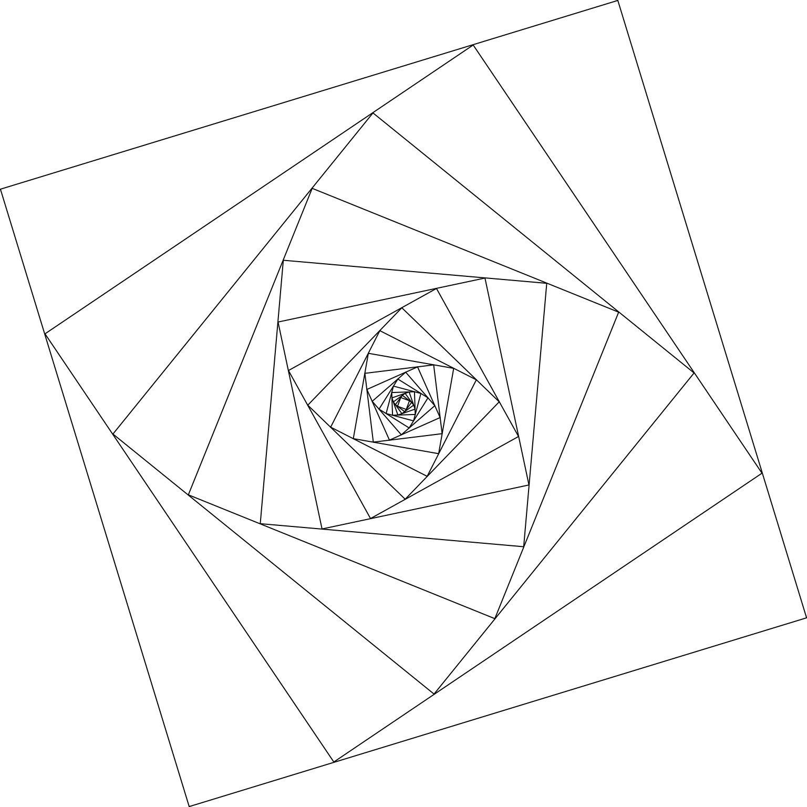
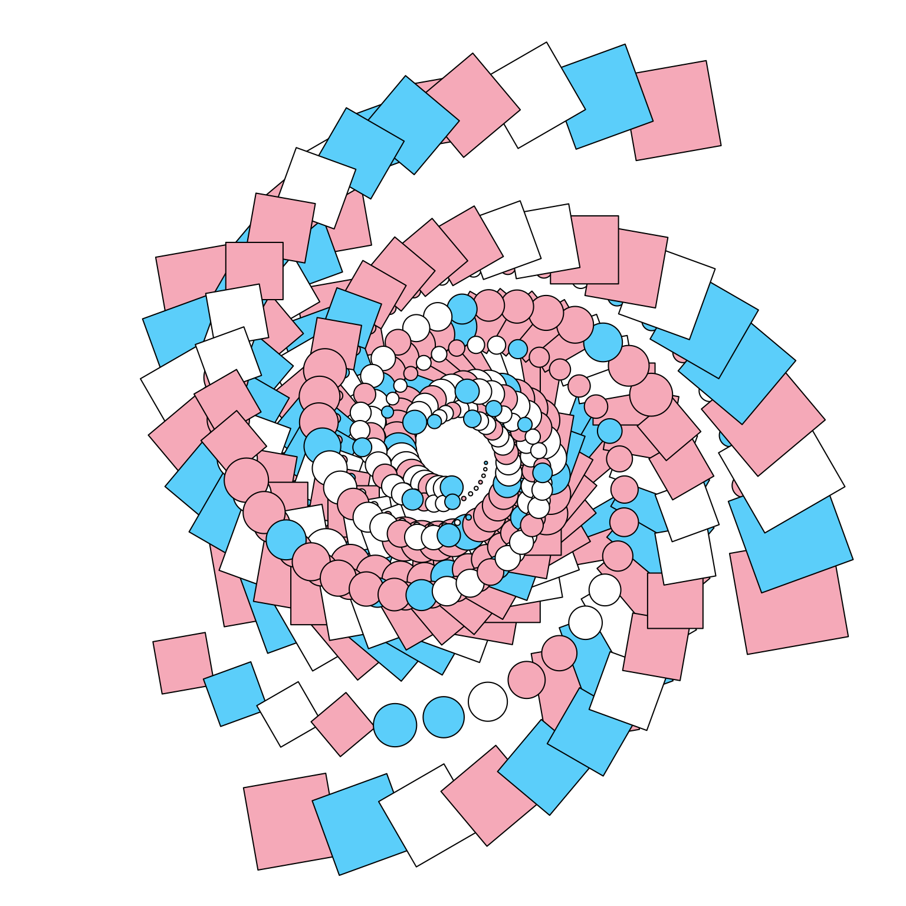
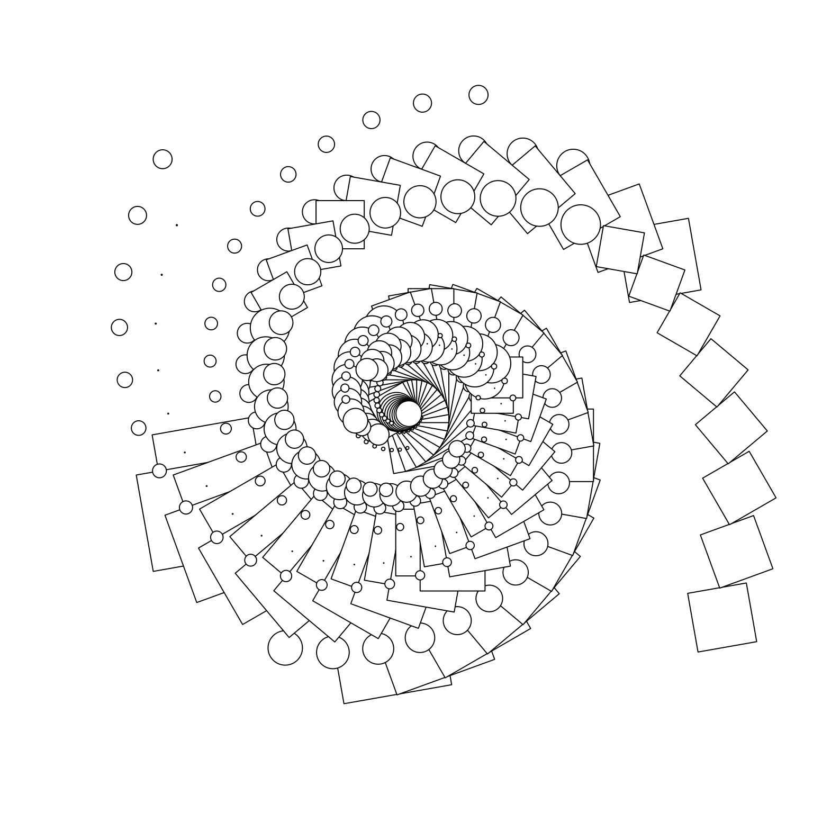
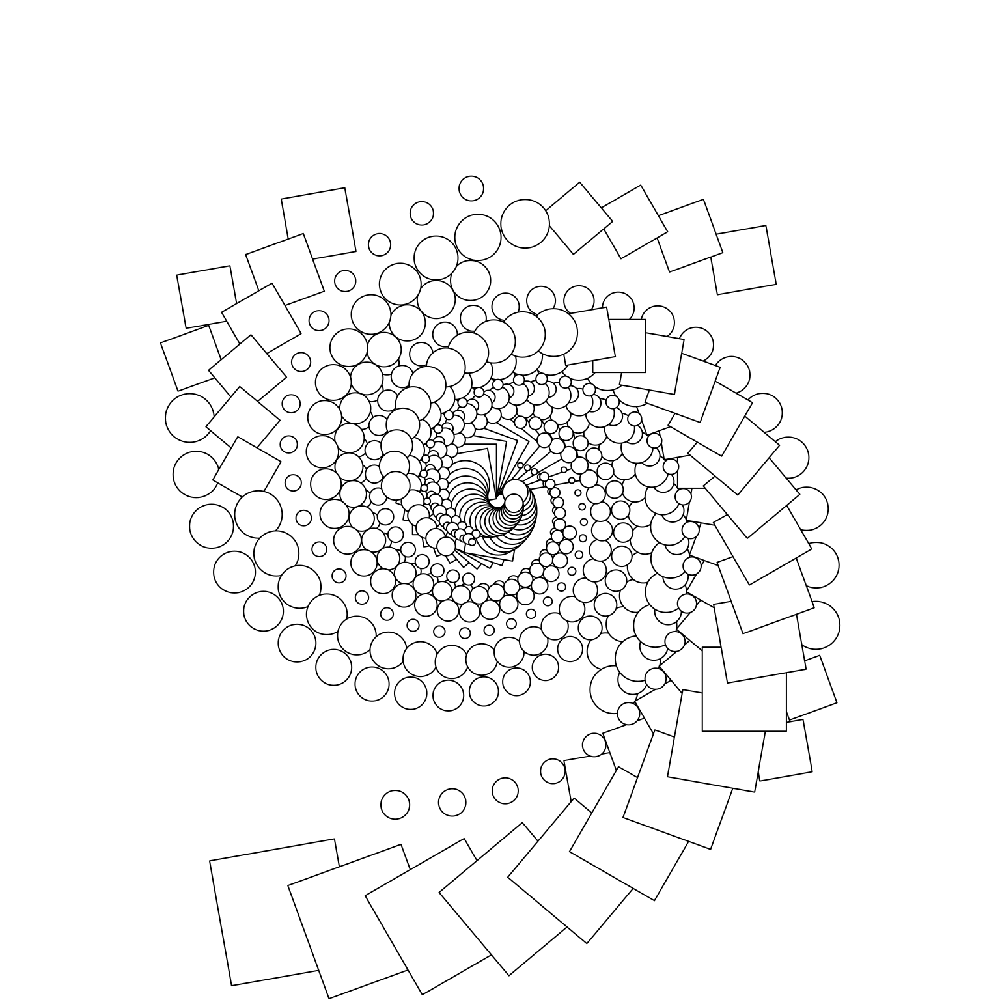

![]()
library(grid)
set.seed(1)
n <- 8
x <- runif(n, min = .3, max = .7) # x coordinate
y <- runif(n, min = .3, max = .7) # y coordinate
r <- runif(n, min = 0, max = .15) # radius
circles <- circleGrob(x = x, y = y, r = r)As I approach four months of unemployment I’m finding I need projects to work on purely for the sake of my mental health. One project that has helped a lot is working on the ggplot2 book (which I coauthor with Hadley Wickham and Thomas Lin Pedersen). At the moment I’m working on the book chapters that discuss the ggplot2 extension system: it’s been quite a lot of fun. One really nice thing about working on those chapters is that I’ve ended up learning a lot about the grid graphics system upon which ggplot2 is built.1
At this point we’re really not sure how much grid to incorporate into the book, but as a fun side-project I decided to adapt some of it and use it as the basis for a post on generative art.
What is grid?
The grid package provides the underlying graphics system upon which ggplot2 is built. It’s one of two quite different drawing systems that are included in base R: base graphics and grid. Base graphics has an imperative “pen-on-paper” model: every function immediately draws something on the graphics device. Much like ggplot2 itself, grid takes a more declarative approach where you build up a description of the graphic as an object, which is later rendered. This declarative approach allows us to create objects that exist independently of the graphic device and can be passed around, analysed, and modified. Importantly, parts of a graphical object can refer to other parts, which allows you to do things like define rectangle A to have width equal to the length of text string B, and so on.
This blog post – and the corresponding section in the book, should we decide to include it – isn’t intended to be a comprehensive introduction to grid. But it does cover many of the core concepts and introduces key terms like grobs, viewports, graphical parameters, and units. Hopefully it will make sense even if you’re completely new to grid.
Grobs
To understand how grid works, the first thing we need to talk about are grobs. Grobs (graphic objects) are the atomic representations of graphical elements in grid, and include types like points, lines, circles, rectangles, and text. The grid package provides functions like pointsGrob(), linesGrob(), circleGrob(), rectGrob(), and textGrob() that create graphical objects without drawing anything to the graphics device.2 These functions are vectorised, allowing a single point grob to represent multiple points, for instance:
Notice that this does not create any output. Much like a ggplot2 plot object, this grob is a declarative description of a set of circles. To trigger a drawing operation we first call grid.newpage() to clear the current graphics device, and then grid.draw() to perform a draw operation:
grid.newpage()
grid.draw(circles)
In addition to providing geometric primitives, grid also allows you to construct composite objects that combine multiple grobs using grobTree(). Here’s an illustration:
squares <- rectGrob(x = x, y = y, width = r * 2.5, height = r * 2.5)
composite <- grobTree(squares, circles)
grid.newpage()
grid.draw(composite)
It is also possible to define your own grob classes. You can define a new primitive grob class using grob() or a new composite class using gTree(), and specify special behaviour for your new class. We’ll see an example of this in a moment.
Viewports
The second key concept in grid is the idea of a viewport. A viewport is a rectangular plotting region that supplies its own coordinate system for grobs that are drawn within it, and can also provide a tabular grid in which other viewports an be nested. An individual grob can have its own viewport or, if none is provided, it will inherit one. In the example below I’ll use viewport() to define three different viewports, one with default parameters, and two more that are rotated around the midpoint by 15 and 30 degrees respectively:
vp_default <- viewport()
vp_rotate1 <- viewport(angle = 15)
vp_rotate2 <- viewport(angle = 30)This time around, when we create our composite grobs, we’ll explicitly assign them to specific viewports by setting the vp argument:
composite_default <- grobTree(squares, circles, vp = vp_default)
composite_rotate1 <- grobTree(squares, circles, vp = vp_rotate1)
composite_rotate2 <- grobTree(squares, circles, vp = vp_rotate2)When we plot these two grobs, we can see the effect of the viewport: although composite_default and composite_rotated are comprised of the same two primitive grobs (i.e., circles and squares), they belong to different viewports so they look different when the plot is drawn:
grid.newpage()
grid.draw(composite_default)
grid.draw(composite_rotate1)
grid.draw(composite_rotate2)
Graphical parameters
The next concept we need to understand is the idea of graphical parameters. When we defined the circles and labels grobs, we only specified some of its properties. For example, we said nothing about colour or transparency, and so these properties are all set to their default values. The gpar() function in grid allows you to specify graphical parameters as distinct objects:
gpA <- gpar(fill = "grey30", col = "white", lwd = 20)
gpB <- gpar(fill = "white", col = "grey30", lwd = 20)The gpA and gpB objects provide lists of graphical settings that can now be applied to any grob we like using the gp argument:
set.seed(1)
n <- 5
circles <- circleGrob(
x = runif(n, min = .2, max = .8),
y = runif(n, min = .2, max = .9),
r = runif(n, min = 0, max = .15)
)
grob1 <- grobTree(circles, vp = vp_default, gp = gpA)
grob2 <- grobTree(circles, vp = vp_rotate1, gp = gpB)
grob3 <- grobTree(circles, vp = vp_rotate2, gp = gpA)When we plot these two grobs, they inherit the settings provided by the graphical parameters as well as the viewports to which they are assigned:
grid.newpage()
grid.draw(grob1)
grid.draw(grob2)
grid.draw(grob3)
Units
The last core concept that we need to discuss is the grid unit system. The grid package allows you to specify the positions (e.g. x and y) and dimensions (e.g. length and width) of grobs and viewports using a flexible language. In the grid unit system there are three qualitatively different styles of unit:
- Absolute units (e.g. centimeters, inches, and points refer to physical sizes).
- Relative units (e.g. npc which scales the viewport size between 0 and 1).
- Units based on other grobs (e.g. grobwidth).
The unit() function is the main function we use when specifying units: unit(1, "cm") refers to a length of 1 centimeter, whereas unit(0.5, "npc") refers to a length half the size of the relevant viewport. The unit system supports arithmetic operations that are only resolved at draw time, which makes it possible to combine different types of units: unit(0.5, "npc") + unit(1, "cm") defines a point one centimeter to the right of the center of the current viewport.
Building grob classes
Now that we have a basic understanding of grid, let’s attempt to create our own “transforming” grob class: objects that are circles if they are smaller than some threshold (1cm by default), but transform into squares whenever they are larger than the threshold.3 This is not the most useful kind of graphical object, but it’s useful for illustrating the flexibility of the grid system. The first step is to write our own constructor function using grob() or gTree(), depending on whether we are creating a primitive or composite object. We begin by creating a “thin” constructor function:
transGrob <- function(x,
y,
size,
threshold = 1,
default.units = "npc",
name = NULL,
gp = gpar(),
vp = NULL) {
# Ensure that input arguments are units
if (!is.unit(x)) x <- unit(x, default.units)
if (!is.unit(y)) y <- unit(y, default.units)
if (!is.unit(size)) size <- unit(size, default.units)
# Construct the grob class as a gTree
gTree(
x = x,
y = y,
size = size,
threshold = threshold,
name = name,
gp = gp,
vp = vp,
cl = "trans"
)
}The transGrob() function doesn’t do very much on its own. All it does is ensure that the x, y, and size arguments are grid units, and sets the class name to be “trans”. To define the behaviour of our grob, we need to specify methods for one or both of the generic functions makeContext() and makeContent():
makeContext()is called when the parent grob is rendered and allows you to control the viewport of the grob. We won’t need to use that for our surprise grob.makeContent()is called every time the drawing region is resized and allows you to customise the look of the grob based on the size or other aspect.
Because these generic functions use the S3 object oriented programming system, we can define our method simply by appending the class name to the end of the function name. That is, the makeContent() method for our surprise grob is defined by creating a function called makeContent.trans() that takes a grob as input and returns a modified grob as output:
makeContent.trans <- function(x) {
x_pos <- x$x
y_pos <- x$y
size <- convertWidth(x$size, unitTo = "cm", valueOnly = TRUE)
threshold <- x$threshold
# Work out which shapes are circles, and which are not
circles <- size < threshold
# Create a circle grob for the small ones
if (any(circles)) {
circle_grob <- circleGrob(
x = x_pos[circles],
y = y_pos[circles],
r = unit(size[circles] / 2, "cm")
)
} else {
circle_grob <- nullGrob()
}
# Create a rect grob for the large ones
if (any(!circles)) {
square_grob <- rectGrob(
x = x_pos[!circles],
y = y_pos[!circles],
width = unit(size[!circles], "cm"),
height = unit(size[!circles], "cm")
)
} else {
square_grob <- nullGrob()
}
# Add the circle and rect grob as children of our input grob
setChildren(x, gList(square_grob, circle_grob))
}Some of the functions we’ve called here are new, but they all reuse the core concepts that we discussed earlier. Specifically:
convertWidth()is used to convert grid units from one type to another.nullGrob()creates a blank grob.gList()creates a list of grobs.setChildren()specifies the grobs that belong to a gTree composite grob.
The effect of this function is to ensure that every time the grob is rendered the absolute size of each shape is recalculated. All shapes smaller than the threshold become circles, and all shapes larger than the threshold become squares. To see how this plays out, lets call our new function:
set.seed(1)
n <- 20
trans <- transGrob(
x = runif(n, min = .2, max = .8),
y = runif(n, min = .2, max = .8),
size = runif(n, min = 0, max = .15),
threshold = 2
)The trans grob contains shapes whose locations and sizes have been specified relative to the size of the viewport. At this point in time we have no idea which of these shapes will be circles and which will be squares, because that depends on the size of the viewport in which the trans grob is to be drawn. Here’s what we end up with for this quarto post that defines the figure size to be 8x8 inches:
grid.newpage()
grid.draw(trans)
The exact same code, but now I’ve made the plot size smaller and as a consequence all the shapes have turned into circles:
grid.newpage()
grid.draw(trans)
If you run this code interactively and resize the plotting window you’ll see that the objects change shape based on the size of the plotting window. It’s not the most useful application of grid, but it is fun to play with.
Pushing viewports
A nice feature of grid is that viewports can be nested within other viewports. At the top level there is always “root” viewport that encompasses the entire image. By default user-created viewports are children of the root viewport, and inherit properties from it. However, there’s nothing stopping you from assigning new viewports to be children of previous user-generated viewports. In the simplest case4, we can use this to create a viewport stack in which each new viewport is the child of the previous one. The pushViewport() function allows us to do this.
Here’s an example:
vp <- viewport(angle = 17, width = .8, height = .8)
box <- rectGrob(width = 1, height = 1)
grid.newpage()
for(i in 1:20) {
pushViewport(vp)
grid.draw(box)
}
In this code I define vp to be a viewport that shrinks the width and height of the current viewport to be 80% of its parent, and rotates the frame by 17 degrees.b Then I repeatedly push vp to the viewport stack, and draw a border (the box grob) showing the edges of that viewport. The effects of each push to the stack are cumulative, as the image shows.
It’s also quite pretty.
The grid package has a lot of tools for working with viewport lists, stacks, and trees. You can assign names to viewports, navigate back and forth between different viewports during plot construction, and so on. But that’s a topic for another day.
Trans spirals
I’m pleasantly surprised at how easy it is to create interesting generative art with grid. As a really simple example, here’s a system that combines two tricks: it uses the transGrob() that we defined earlier, and it uses a viewport stack to create spiraling images:
trans_spiral <- function(seed) {
set.seed(seed)
n <- 15
trans <- transGrob(
x = runif(n, min = .1, max = .9),
y = runif(n, min = .1, max = .9),
size = runif(n, min = 0, max = .15),
threshold = 1
)
cols <- sample(c("#5BCEFA", "#F5A9B8", "#FFFFFF"), 30, TRUE)
vp_spiral <- viewport(width = .95, height = .95, angle = 10)
grid.newpage()
for(i in 1:30) {
pushViewport(vp_spiral)
grid.draw(grobTree(trans, gp = gpar(fill = cols[i])))
}
}It produces output like this…
trans_spiral(1)
… and this …
trans_spiral(2)
… and this.
trans_spiral(3)
Footnotes
The best text to use if you want to learn grid is R Graphics (2nd ed) by Paul Murrell. I’ve found myself relying on it quite heavily.↩︎
There are also functions
grid.points(),grid.lines(), etc that immediately draw the corresponding grob to the graphics device, but when creating a generative art system I find it makes more separate the plot specification from the drawing process.↩︎This example is based on the “surprise grob” example originally written by Thomas Lin Pedersen. I’ve adapted it a bit here because I’m the kind of person who does that.↩︎
The only case I’m going to consider here.↩︎
Reuse
Citation
BibTeX citation:
@online{navarro2023,
author = {Navarro, Danielle},
title = {Generative Art with Grid},
date = {2023-03-31},
url = {https://blog.djnavarro.net/posts/2023-03-31_generative-art-with-grid},
langid = {en}
}
For attribution, please cite this work as: